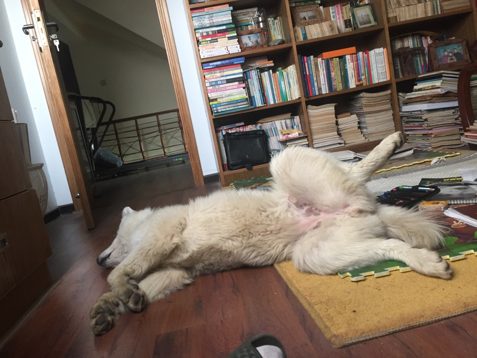
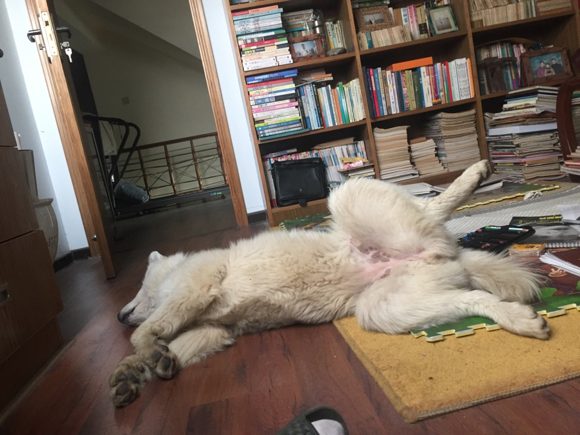
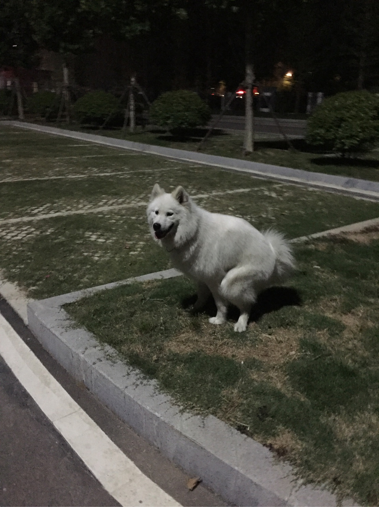

正文: 第一见到她 是在一月十号 当时天特别冷 她在小学门口溜达 可能是是想蹭着吃的 她周围都是小孩子 当时这么模样确实是太寒颤了 我怕大人看到她在小孩子周围会打她 就给她买了些吃的 带到一边去了 我当时还没有要领养的想法 可那么冷的天放任她在外面流浪 一定是熬不过这个冬天的 我也只好推着车子一路唤着她 带她去宠物医院先看病 再联系当地的救助站 看看是否愿意收留她
去医院的路上 她特别兴奋还去捉鸟 看她那副蠢样子 我真的动心了 我要养她 要对她负责 我不吃也要让她吃好喝好
从此我就踏上漫漫养狗路 因为我还是学生还是高三复读狗（学画画的 艺术生） 时间和精力真的有限 再加上是复读 家里平时给的钱也不是很多 勉勉强强够我自己来的 没办法 我只能去求助小动物救助站 他们也给我捐了些钱 让我应付了几天 毕竟宠物医院的开销太大了 这狗我也不敢把她带回家 家里还有小孩子 而且她这副模样 我父母也不可能接受她的 我只能把她寄养在宠物医院 每天不算治疗的费用一天需要四十 对于一个没有经济来源的人来说 真的压力很大 我每天不敢吃不敢喝的 即使如此也还是难以负担
说来也是巧 我一月十七号要去南京校考 家里人会给我一大笔的生活费 我只要除去考试的报名费和住宿费 自己吃的在便宜些 就可以省下不少钱 这狗就养得起了 然后我就在南京年前年后吃了二十多天的老干妈和煎饼 把这狗拉扯大了洗干净的样子 当时太瘦了 屁股上都没有肉浑身上下除了皮就是骨头 屁股上没有毛 都磨破了 不敢坐在笼子里 也不敢坐在地上 会疼 只能趴在沙发上 我回家拿了小被子给她铺上 她才能在笼子里趴着 当时都快心疼死了送到宠物医院洗澡前 我准备回画室上课（带狗去医院没敢请假翘课了） 她看我要走一爪子抓过来 不让我走 真的很疼人我从南京校考回来去接她拍的还是很瘦第一次跟我回家
啃断了我爸的小盘枣 我带她中午跑出去没敢回家吃饭 我爸走了才敢回去拉臭臭
 力气贼大去小区里的池塘淌水 都是我惯的睡姿没有一点女孩子的样子我的小美伢～爱你呦～ =͟͟͞͞(๑•̀=͟͟͞͞(๑•̀д•́=͟͟͞͞(๑•̀д•́๑)=͟͟͞͞(๑•̀д•́
力气贼大去小区里的池塘淌水 都是我惯的睡姿没有一点女孩子的样子我的小美伢～爱你呦～ =͟͟͞͞(๑•̀=͟͟͞͞(๑•̀д•́=͟͟͞͞(๑•̀д•́๑)=͟͟͞͞(๑•̀д•́ 分割线
非常感谢大家对美伢的关心 美伢现在过得挺好的（吃的比我还好） 我的父母也都已经接受了她了 天天在家里吃香的喝辣的 过得比我还舒服
原答案里有提过 我是个高考生 现在高考录取结果已经出来 很理想 非常感谢大家的祝福 我是来给你们报喜的（捂嘴笑 好开心）
给你们说下美伢现在在我家里的地位吧 我的高考成绩一出来 我爸就给美伢做了顿好吃的！（不是我！不是我！这还是亲爹嘛！）真是人不如狗￣へ￣
 狗子的近期照！
狗子的近期照！